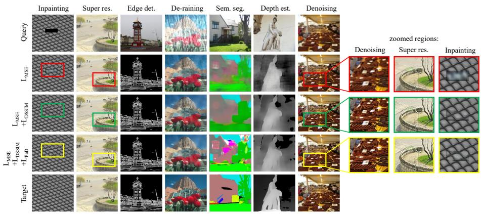

arXiv 新增 · P2 · 2026-06-10
Beyond Model Size：视觉 foundation model 的少样本/上下文适应越来越重要，这篇提醒我们要把 evaluation protocol 设计得更像真实未见任务
用极端小模型作为反例，质疑当前 VICL 评估是否真的测到了视觉 in-context adaptation，而不是测到任务编码或预训练任务重合。
编号2606.10905
优先级P2
类别arXiv 新增
会议arXiv 新增
方法训练一个约 1M 参数、7 万图像训练量的 tiny visual in-context model，并与大约 7000 倍规模的 VICL 模型在小分布偏移、未见 task encoding 和新任务适应上对照。
来源arXiv / OpenReview
先说结论。视觉 foundation model 的少样本/上下文适应越来越重要，这篇提醒我们要把 evaluation protocol 设计得更像真实未见任务。 用极端小模型作为反例，质疑当前 VICL 评估是否真的测到了视觉 in-context adaptation，而不是测到任务编码或预训练任务重合。


核心问题
视觉 foundation model 的少样本/上下文适应越来越重要，这篇提醒我们要把 evaluation protocol 设计得更像真实未见任务。
方法拆解
训练一个约 1M 参数、7 万图像训练量的 tiny visual in-context model，并与大约 7000 倍规模的 VICL 模型在小分布偏移、未见 task encoding 和新任务适应上对照。
主要贡献
用极端小模型作为反例，质疑当前 VICL 评估是否真的测到了视觉 in-context adaptation，而不是测到任务编码或预训练任务重合。
实验看点
摘要强调实验暴露了大模型评估协议中的 chasm：资源规模差距巨大，但测量到的 adaptation 能力未必与规模成正比。
局限与读法
它是诊断/反证型论文，不提供新的大规模视觉自监督模型；结论依赖所选任务和 tiny model 训练设置。